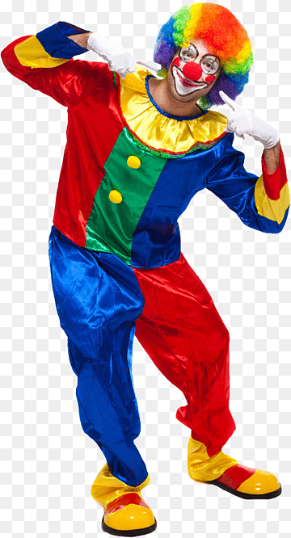
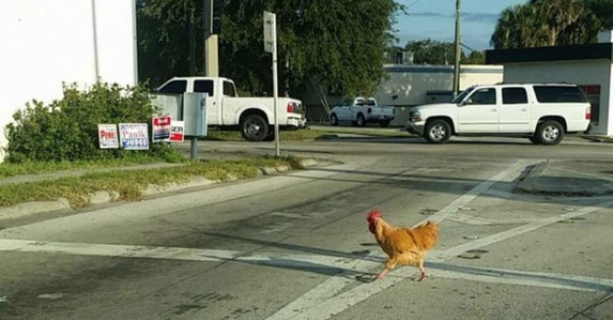

miras a ambos lados antes de cruzar la calle, no pasa ningun auto asi que decides cruzar, pero escuchas una risa miras a tu derecha y ves al criminal que se habia escapado "el chistosito".

los policias llegan al lugar y le apuntan con las pistolas, pero el payaso les cuenta un chiste: "¿saben quien es el novio de barbie?" los policias estaban tenson y asustados mirando al payaso resistiendo las ganas de preguntar mientras el payaso los miraba con una sonrisa, pero vos le preguntas:"¿quien era el novio de barbie?" el payaso responde:"ken-sabe HAHHAHAHAHA", los policias:"nooooooo", el payaso intenta escapar cruzando la calle pero es atropellado por no mirar a ambos lados.
pensando que todo termino la ambulancia se lleva el cuerpo del criminal y los policias se van aliviados de que todo termino, y vos miras a ambos lados antes de cruzar la calle ves que no pasa ningun auto asi que cruzas, pero escuchas una vos preguntando:"¿porque la gallina cruzo la calle?" era la vos del payaso, preguntas:"¿porque cruzo la calle?", el payaso:"¡para llegar al otro lado! HAHAHAHAHHA". no entendes el chiste y te das cuenta que te tranformaste en la gallina y cruzas la calle.
final malo: el chiste

volver al inicio